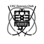
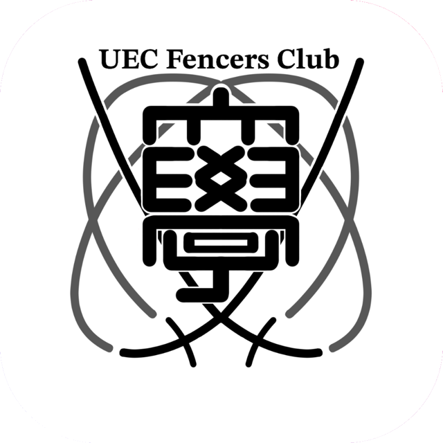

PLAYER
競う大会への参加
Player メンバーは選手として大会に出場します。学内に練習場所がまだないため、他大学や高校のフェンシング部、フェンシングスクールの練習に参加しながら力をつけています。
- 全日本国公立大学フェンシング大会 出場
- 関東国公立フェンシング大会春季・秋季 出場
- 関東学生フェンシング選手権大会関カレ 挑戦
- 全日本学生フェンシング選手権大会インカレ 挑戦
国公立大学の大会には、出場要件により「電気通信大学」として出場しています。

UEC Fencers Club01 About
電気通信大学には、フェンシング部もフェンシングサークルもありませんでした。高校まで剣を握ってきた学生が、入学と同時に競技をやめるしかない。UEC Fencers Club は、その状況を変えるために 2026 年 8 月に結成した学生団体です。
もうひとつの出発点は、フェンシングが「ルールが分かりにくい」という理由で敬遠されがちな競技だということです。私たちは経験者だけの場にせず、未経験の人やルールを知らない人も気軽に関われる活動を大事にしています。
※ 電気通信大学の非公認団体です。

02 Activity
フェンシングの審判機には赤と緑、ふたつのランプがあります。このクラブの活動も同じく二本立てです。どちらか片方だけでも、両方でも参加できます。
PLAYER
Player メンバーは選手として大会に出場します。学内に練習場所がまだないため、他大学や高校のフェンシング部、フェンシングスクールの練習に参加しながら力をつけています。
国公立大学の大会には、出場要件により「電気通信大学」として出場しています。
PROJECT
剣を持たないメンバーにも役割があります。初めて見る人が「いま何が起きたのか」を分かるようにする。電通大らしく、技術でフェンシングの間口を広げる活動です。
防具や剣がなくても、フェンシングの駆け引きを体験できる入門スポーツを考えています。
映像・光・音響による演出と、ルールや審判の判定をその場で解説する仕組みを開発します。
開発したものを実際に導入し、ルールを知らない人でも楽しめるイベントを開きます。
03 Fencing 101
フェンシングには種目が3つあり、「どこを」「どう」攻撃すれば得点になるかが違います。種目を選ぶと有効面が光ります。
先に攻撃を始めた側に「攻撃権」があり、相手は剣を払うなどして権利を奪ってから反撃します。同時に突いたときは、権利を持っていた側の得点です。
とにかく先に突いたほうの得点。ほぼ同時に突けば両者に 1 点ずつ入ります。ルールが単純なぶん、間合いと我慢の勝負になります。
3種目で唯一「斬り」が認められています。開始の合図から数秒で決着がつくことも多く、スピードと思い切りが勝負を分けます。
04 Record
東京外国語大学フェンシング部との合同練習
春の関東国公立大学フェンシング大会に出場
エペ男子個人Best 32
UEC Fencers Club 結成
創設メンバー 3 名でスタート
令和8年度 全国高等学校総合体育大会（インターハイ）フェンシング競技
競技役員として派遣され、大会運営に協力
東京外国語大学フェンシング部との合同練習
全日本国公立大学フェンシング大会に出場
フルーレ男子団体Best 32
東亜学園高等学校フェンシング部の練習に参加
フェンシングスクール MNH の練習会に参加
05 Member
情報理工学域の 1 年生から 4 年生まで、7 名で活動しています。
代表（運営）
志賀 蔵之介
主将（競技）
T.H.
副将 兼 会計
S.Y.
マネージャー
A.F.
メンバー
Y.A.
メンバー
S.S.
メンバー
T.T.
06 Join
大学でも続けたい人を待っています。種目は問いません。
ルールを知らなくて大丈夫です。体験会から気軽にどうぞ。
映像、音響、電子工作、プログラミング、イベント運営。得意なことを活かせます。
連絡先は現在準備中です。学内でメンバーを見かけたら、気軽に声をかけてください。